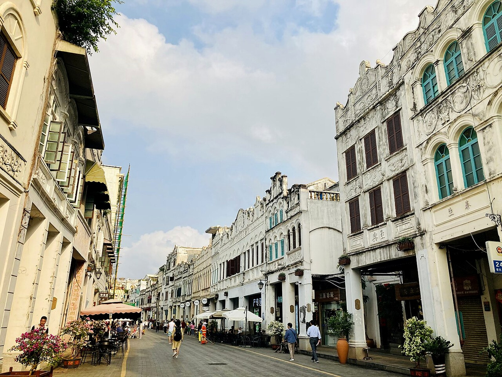
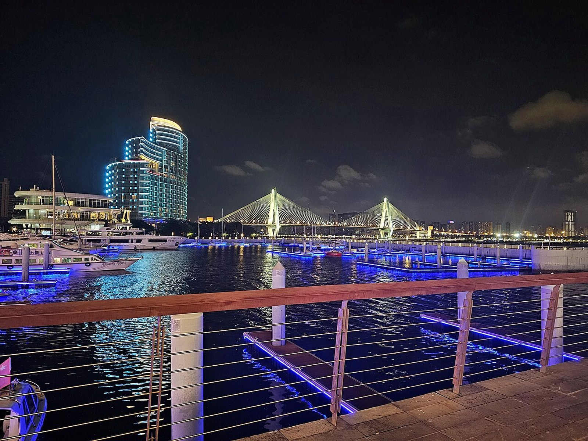

Which outbound and return flights?
Old screenshots are not current quotes. Compare the August 15 Changsha–Haikou and August 21 Sanya–Changsha totals, including baggage and change rules.
MISSION_01 / EAST COAST
This is a working plan for two friends—not a packaged tour. The current draft covers August 15–21, seven days and six nights, entering through Haikou and leaving from Sanya. Freediving remains optional.

01
These parts are not final. They are the best places to start the discussion after reading the plan.
Old screenshots are not current quotes. Compare the August 15 Changsha–Haikou and August 21 Sanya–Changsha totals, including baggage and change rules.
The seven-day route does not return to Haikou. Compare the open-jaw airfare difference with the Haikou pickup / Sanya return surcharge.
It is excluded from the base itinerary. Consider only a legitimate local Hainan experience if Wuzhizhou runs on schedule and conditions are suitable.
The car carries luggage and handles intercity travel. A motorcycle is limited to verified legal coastal roads; no city riding in Haikou or Sanya.
Military-affiliated hotel benefits may help, but compare like-for-like final prices. Do not detour for a benefit on non-priority nights.
02
August 15–21: arrive in Haikou, leave from Sanya, stay two nights in Wanning and two in Haitang Bay, and reserve D6 for weather recovery or rest.
Take an afternoon or evening nonstop flight, collect the car, and check in. No island trip, surfing, long outdoor shoot, or city motorcycle riding.
Choose only one short stop between Wenchang and Boao. Skip it in poor weather and continue to Wanning; shoot sunset at Shenzhou Peninsula or Shimei Bay.
Book a formal beginner surf lesson at Riyue Bay. Rent a motorcycle only for a verified legal section that does not require an expressway.
Choose one short stop at Xincun Port, Clear Water Bay, or a public coast near Chiling, then scout Houhai and stay two nights in Haitang Bay.
Target the first ferry. This is the exception to the afternoon-first rhythm: an early start is needed for photography, activities, and the return ferry.
Move Wuzhizhou here if D5 is cancelled. Otherwise choose Yalong Bay, Sanya Bay, rest, or a supervised local Hainan experience. Certification does not fit this itinerary.
Refuel and return the car in Sanya. Carry cameras, drives, power banks, and spare lithium batteries in cabin baggage; add no distant sight that morning.
03
As of August 2, only the trend is meaningful: shower and thunderstorm signals strengthen around August 15–16, while models still disagree. This is not a final forecast.
08.15Arrive in Haikou; collect the car and check in
08.21Return from Sanya; add no long detour
Keep the arrival day light. Put Wuzhizhou, surfing, and freediving into later flexible windows, and favor products with weather-related rescheduling or refunds.
Single Open-Meteo best-match snapshot from August 2. Values are Sanya / Haikou / Wanning; confidence improves close to departure.
Use the 72-hour forecast to keep or remove Wenchang/Boao and confirm refund rules for surfing and Wuzhizhou.
Recheck airport storms, flooding, wind, and flight status. Rain probability does not mean continuous rain.
Review radar, marine wind, wave height, and ferry notices before choosing the afternoon coast or activity.
04
The car solves luggage and cross-city movement. Motorcycle riding is reserved for verified legal coastal roads around Wanning.
A compact SUV or roomy sedan is enough. Choose adequate collision and third-party coverage.
Budget 550–650 km. Confirm the one-way return fee, and never drive onto beaches or rough reef roads.
Inspect registration, license, insurance, and contract. Police guidance—not a rental shop's verbal promise—defines the legal boundary.


Haikou city, Sanya city, Hainan expressways, and any road with prohibition signs or uncertain access.
05
These are location and benefit candidates, not endorsements. Compare final price, parking, cancellation, and the route for that day.
 Location illustration—not a hotel photograph
Location illustration—not a hotel photographAn old sample showed a ¥400 standard garden room for August 20–22. The revised stay is around August 18–20, so inventory and cancellation terms must be checked again.
Official siteAn August 15 sample showed ¥158 publicly and ¥130 through the benefit page; inventory remains unconfirmed.
The old August 22 sample was ¥245 public / ¥240 benefit. The new date must be repriced.
Better for restaurants, a walkable beach, and one night of city life.
06
Wuzhizhou and surfing are core candidates. Freediving is optional only when D6 remains free and conditions are suitable.
Choose a weekday, first ferry, and official booking channel. Buy entry plus selected activities for photography; consider a bundle only if every item, availability condition, and refund rule is explicit.
D6 may hold a supervised local pool or shallow-water experience. Certification requires more time than this seven-day Hainan route allows.
Use only when Wuzhizhou does not move, conditions are suitable, and the instructor and insurance are verifiable.
If any condition fails, keep D6 for Yalong Bay / Sanya Bay, recovery and photographs.
Never hyperventilate, never practise breath-holds alone in water, and never confuse equalisation skill with open-water safety.
Hainan experience safety and enquiry checklistStart with at least a two-hour formal lesson in a beginner sand-bottom area. Rent independently only if the instructor confirms conditions and skill are suitable.
¥600–1,000lesson budget for two
1/1000sto freeze action
After 16:00for side light if waves allow
07
Define the visual ideas first, then decide time on location. No photograph is worth disrupting safety or the route.

The rougher coast does not need to imitate Sanya. Let harbours, stone, salt, and sunset keep their texture.

Motorcycle images happen only in legal parking areas or safe side roads. Use a telephoto lens instead of repeated turns on a live road.
Street portraits require consent when people are identifiable. Do not fly or photograph near airports, ports, launch sites, military areas, or unknown sensitive facilities.
08
Checklist state is stored only in this browser. Prepare separately, then confirm which shared items need only one copy.
09
This is not a quote. It is a discussion model for deciding which additions are worth paying for.
Two travellers, using midpoint planning estimates rather than confirmed prices.
Six room nights in seven daysHaikou 1, Wanning 2, Haitang Bay 2, Sanya 1; hotel prices still require a fresh check
Flights¥2,800
Car and fuel¥3,100
Stays¥2,600
Food¥2,600
Water and tickets¥3,300
Insurance and reserve¥2,000
This site uses public sources and forecast snapshots available by August 2, 2026. Daily weather, flights, hotel benefits, marine conditions, motorcycle restrictions, and course prices must be checked again before payment.